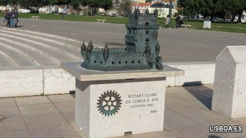

Torre de Belém (Lisboa)

A orillas del Tajo se erige la Torre de Belém de Lisboa, símbolo de la ciudad.
Está declarada Patrimonio de la Humanidad y su ubicación sobre la antigua playa de Restelo, desde donde partían las carabelas en sus expediciones hacia otros continentes, no es casual.
La historia de la Torre de Belém
Torre de Belem (Lisboa) A orillas del Tajo se erige la Torre de Belém de Lisboa, símbolo de la ciudad. Está declarada Patrimonio de la Humanidad y su ubicación sobre la antigua playa de Restelo, desde donde partían las carabelas en sus expediciones hacia otros continentes, no es casual.¡Encuentra rápido lo que buscas!La historia de la Torre de Belém La torre data del siglo XVI, Era de los Descubrimientos, cuando se construyó como fortaleza para proteger la entrada al puerto a través del Tajo (en el interior del baluarte aún podemos ver los cañones). Con el tiempo, su uso defensivo quedó relegado y se utilizó como centro reacaudador de impuestos e incluso prisión.
¡Se nos olvidaba! Antes de comenzar tu visita al monumento te recomendamos observar una curiosa maqueta del mismo que se encuentra a la entrada.